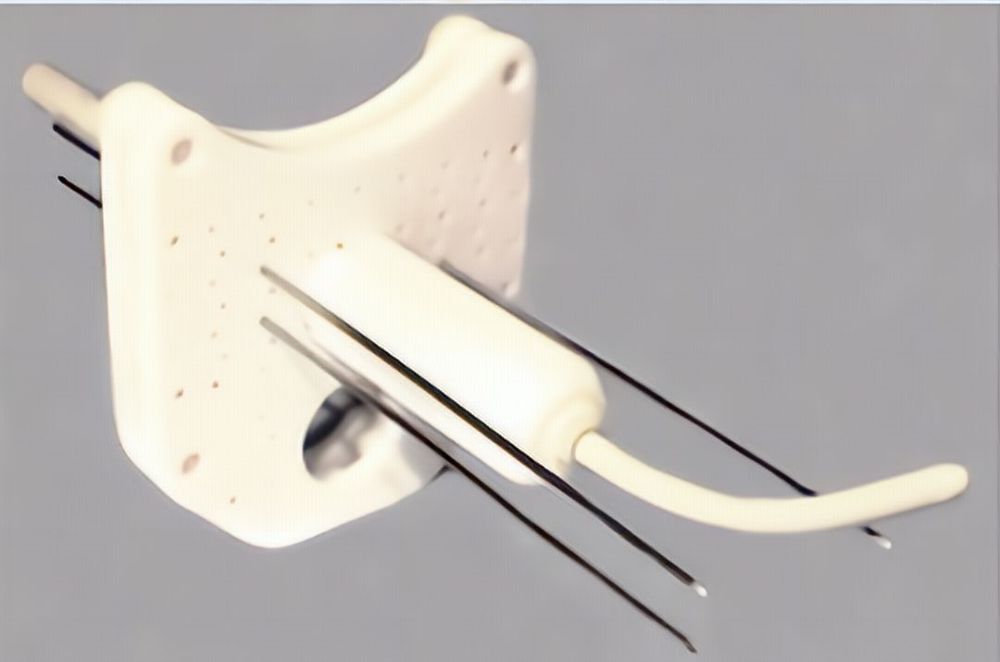

2 Material y métodos
2.1 A method to incorporate interstitial components into the TPS gynecologic rigid applicator library (Otal2017 publicado en febrero de 2017)
2.1.1 Aplicadores, adquisición de imágenes de resonancia magnética y planificador de braquiterapia (TPS)
El aplicador Utrecht compatible con CT y MRI (Nucletron, una empresa de Elekta, Elekta AB, Estocolmo, Suecia) se desarrolló específicamente para el tratamiento combinado intracavitario/intersticial de cánceres ginecológicos1. Su diseño se basa en el aplicador Fletcher (Nucletron, una compañía de Elekta, Elekta AB, Estocolmo, Suecia), utilizando los ovoides como plantilla para la colocación de agujas intersticiales (hasta 5 agujas de plástico en cada uno). La profundidad de inserción de las agujas puede controlarse mediante una herramienta suministrada por el fabricante figura 2.1. La colocación final de las agujas depende del implante, tanto en trayectoria como en profundidad. Sin embargo, aunque existen dummies para el componente endocavitario, no los hay para el intersticial. Hasta ahora, las posiciones de las agujas se reconstruían utilizando su señal de túnel negro en MRI T2 y la medida de la profundidad de inserción.
El objetivo del aplicador Benidorm (Lorca Marin, Murcia, Spain) para BT intersticial es proporcionar un nuevo aplicador de BT para tumores ginecológicos, en particular para el carcinoma cervical localmente avanzado2. Este aplicador combina la radioterapia intracavitaria con agujas intersticiales transperineales compatibles con MRI, intentando superar las limitaciones de las plantillas de agujas actualmente disponibles en el mercado. Permite la cobertura total de la extensión craneocaudal y lateral del tumor, incluyendo las regiones intrauterinas, parametriales y paravaginales. El aplicador Benidorm (figura 2.2) está indicado principalmente para casos de carcinoma cervical avanzado con invasión parametrial voluminosa, afectación paravaginal extensa o invasión de la vejiga o el recto. Su diseño permite mejorar el contorno y la planificación conformada del tratamiento basándose únicamente en la MRI.

Consta de una plantilla con orificios rectos y angulados que permiten la inserción de agujas de titanio en con diferente divergencia, junto con los tubos intrauterinos compatibles con MRI existentes en la actualidad. Dispone de 12 filas de orificios, con 35 orificios rectos y 16 orificios divergentes (\(7^{\circ}\)), ofreciendo la posibilidad de una cobertura total de la extensión del tumor, incluyendo el parametrio distal y toda la vagina. El aplicador también permite la inclusión de un cilindro vaginal y dispone de pistas obturadoras de plástico para evitar el desplazamiento de la aguja. En resumen, el aplicador Benidorm combina las ventajas de los aplicadores MUPIT y Utrecht y permite una planificación exclusiva basada en MRI para el tratamiento de BT.
La configuración de agujas del aplicador Benidorm dota de una gran flexibilidad en la elección de agujas a implantar para cubrir el volumen objetivo. Por otro lado, para corregir la posible desviación de la aguja de su posición óptima puede hacer necesaria la necesidad de inserciones repetidas para su colocación en el sitio previsto. Estas inserciones repetidas de agujas pueden contribuir a aumentar el traumatismo de los tejidos circundantes. Cada inserción puede causar una deformación y un traumatismo adicionales en los tejidos, lo que puede provocar molestias o dolor a la paciente e incidir negativamente en su recuperación post operatoria.
El aplicador Benidorm posee tres alojamientos en los que se colocan tres bolas de vitamina A. Estas bolas producen una señal de excelente visibilidad en las secuencias T1 y T2 de la MRI y su presencia obedece a ayudar en el proceso de reconstrucción. Las agujas se reconstruyen siguiendo la señal del túnel negro y el vacío de la punta. En la MRI en T1, las posiciones pueden determinarse correctamente, pero en T2 el contraste es insuficiente3. Por lo tanto, la profundidad de inserción de cada aguja ha de obtenerse midiendo la longitud libre con una regla.
Las exploraciones de MRI de los pacientes se adquirieron con un generador de MRI de 1,5 T (Optima MR 450w, software versión DV24, GE Medical Systems, Milwaukee, Wisconsin, EE.UU.). Se utilizó una bobina receptora phased array de ocho canales siguiendo los protocolos clínicos de MRI estándar. Siguiendo las recomendaciones de GEC-ESTRO4–6, la adquisición consistió en una secuencia axial de eco espín rápido con recuperación rápida ponderada en T2 (FRFSE) con un grosor de corte reducido a 2 mm. Esta secuencia se utilizó tanto para el contorneo como para la reconstrucción. Los detalles de la configuración de adquisición de MRI están descritos en Richart et al.3. La biblioteca desarrollada se ha implementado en el Oncentra Brachytherapy TPS (Nucletron, una empresa de Elekta, Elekta AB, Estocolmo, Suecia), versión 4.3.0, con un módulo de braquiterapia que incluye una biblioteca de aplicadores rígidos. Se utilizó un programa independiente, el Library Manager Applicator (LMA), para añadir modelos 3D de los aplicadores a la base de datos de Oncentra.
2.1.2 Modelización de los aplicadores Utrecht y aplicador Benidorm en la biblioteca de aplicadores de Oncentra
En el Oncentra Brachytherapy TPS, los archivos de entrada para el gestor de la biblioteca de aplicadores son un conjunto de archivos Extensible Markup Language (xml) organizados en una estructura jerárquica. El archivo principal tiene una extensión rule.xml. En este archivo principal se configura cada aplicador, con todas sus opciones, para su uso en Oncentra. Los bloques utilizados en este archivo son ficheros independientes que incluyen información sobre las propiedades de los canales, ovoides, etc. Estos bloques se dividen en cuatro tipos: tubos, ovoides, cilindros y fijaciones. Estos ficheros contienen cuatro subsecciones: 1- Una descripción, que incluye el ID de la pieza y el tipo. 2- El conjunto de puntos de anclaje. 3- Los conectores utilizados. 4- Información sobre la superficie del elemento (llamada skin en Oncentra).
2.1.3 El aplicador Utrecht
En este caso, se parte de un modelo proporcionado por Elekta sin la componente intersticial. El primer paso es determinar la distancia desde la superficie de los ovoides de los puntos de salida de las agujas. Se utilizó la información técnica facilitada por Elekta para obtener las coordenadas de los puntos de salida de las agujas en el sistema de referencia intrínseco de los ovoides (figura 2.3). Para determinar las coordenadas en el sistema de referencia del aplicador, se ha de encontrar la traslación y rotación necesarias. La traslación viene dada por la posición de la punta de cada canal del ovoide. Para hallar la rotación, se obtuvo el plano que contiene cada uno de los canales de los ovoides a partir de los datos del archivo correspondiente utilizando un método de mínimos cuadrados. Una vez definidos los planos, se hace coincidir las direcciones x y z en ambos sistemas de referencia.
Una obtenidos los puntos de salida, el siguiente paso es crear un archivo correspondiente a cada aguja. Se creó un modelo 3D de cada aguja con FreeCAD (versión 0.14, http://www.freecadweb.org/) y el software Open Parametric Modeler. Exportando este modelo a un archivo .obj de Wavefront y procesándolo en Excel, obtuvimos la sección skin. El conector de la aguja en este nuevo archivo también se obtuvo utilizando un modelo de FreeCAD. Los conectores definidos en el archivo del canal del ovoide son los puntos de salida del ovoide calculados en el sistema de referencia del aplicador Utrecht.
2.1.4 El aplicador Benidorm
El proceso de modelado para el TB fue diferente. Dado que en la base de datos de Oncentra sólo se incluían los tubos intrauterinos del conjunto de aplicadores vaginales, se utilizó FreeCAD para crear un nuevo modelo 3D del template. Con este programa, fue convertido el diseño real a un archivo vectorial se modelaron las agujas de titanio con un proceso análogo al descrito en la sección 2.1.3, los 4 cilindros (45 mm, 80 mm, 100 mm y 135 mm) y las placas perineales con las esferas de vitamina A (figura 2.4). Mediante este paso se obtiene la información necesaria sobre el skin del aplicador, y se encuentran los datos necesarios para obtener las posiciones relativas de todas las partes que configuran el aplicador, de forma que se puedan crear los conectores. Toda esta información permite la creación de los diferentes archivos y sus enlaces utilizando técnicas descritas en la sección 2.1.3.
2.1.5 Procedimiento de reconstrucción
En el caso del aplicador de Utrecht, el proceso de reconstrucción de la MRI T2 se basó en los puntos que tienen en común la sección rígida y la parte intersticial. En primer lugar, la parte rígida se reconstruye utilizando las dummies específicas que existen para la sonda intrauterina y los ovoides, que son claramente visibles en la secuencia T2, junto con el skin del aplicador. Estos se han descrito en Pérez-Calatayud et al.7 y las dummies son comercializadas por la compañía Elekta. Estas dummies consisten en catéteres llenos de una mezcla de solución salina y yodo. El agua es la que proporciona la visibilidad en la imagen, y el yodo simplemente colorea el líquido para facilitar la comprobación de la presencia de burbujas. El extremo distal del maniquí se corresponde con la primera posición de parada de la fuente (tip position). La posición de la punta de ambos ovoides y la posición de la punta del tándem intrauterino (marcadores de MRI) se utilizan como puntos de referencia para localizar el aplicador. Se realizan pequeñas correcciones para ajustar mejor el canal negro dejado por el aplicador y los marcadores de MRI, utilizando las marcas de la skin de los ovoides y la sonda. A diferencia de la sonda y los ovoides, este tipo de dummies son incompatibles con las agujas de plástico, debido a su diámetro más estrecho. Puede haber ligeras desviaciones de las posiciones modeladas de las puntas de las agujas. Para ajustar las agujas a su posición en el implante, pueden realizarse pequeñas correcciones girando las agujas alrededor de los puntos de salida en los ovoides.
La modelización correcta de la componente intracavitaria nos da la localización de los puntos de salida de las agujas, es decir, los puntos de salida en la superficie del ovoide. Combinando esta información con la longitud libre, nos permite conocer la posición completa de la aguja. En el caso del TB, una vez hecha la elección de las agujas, se introduce la configuración de las agujas y los datos de la longitud libre en una aplicación java programada por los autores para generar archivos xml y posteriormente se importa en la biblioteca de aplicadores.
2.2 Pre-plan technique feasibility in multi-interstitial/endocavitary perineal gynecological brachytherapy (Rodriguez2017 publicado en octubre 2017)
La descripción del aplicador Benidorm, el procedimiento de adquisición y el modelado en la biblioteca de aplicadores de Oncentra ya se describió en la sección 2.1.1.
El procedimiento de pre-planificación implementado es el siguiente:
La adquisición de MRI T2 previa a la braquiterapia se realiza con la plantilla colocada sólo con el cilindro vaginal (sin sonda uterina ni agujas) 3-5 días antes del implante de braquiterapia. Se introduce un obturador vaginal de longitud conocida (40, 60, 100 o 130 mm según la longitud vaginal) y se llena la vejiga con 50 cc de solución salina.
En este conjunto de imágenes, se dibuja el CTV. El volumen diana (GTV) clínico y de imagen en el momento del diagnóstico y el GTV en el momento de la braquiterapia se unifican en un único CTV, incluyendo GTV, CTV-HR y CTV de riesgo intermedio (CTV-IR), basándose en las recomendaciones del GEC ESTRO8–10. Las agujas necesarias y sus profundidades se seleccionan para abarcar el CTV (de la forma más conforme posible). Para facilitar esta tarea, se ha desarrollado una aplicación basada en Java vinculada al mismo TPS en el que se ha implementado la biblioteca desarrollada en la sección 2.1.1. A partir de este procedimiento, se obtiene la identificación de cada aguja y su profundidad previamente al implante.
Con esta información, el ORT procede al implante y, posteriormente, se realiza una MRI post-implante, en la que se establece el contorno, las agujas más la reconstrucción en tándem, y la optimización.
2.3 Review on Treatment Planning Systems for Cervix Brachytherapy (Interventional Radiotherapy): Some Desirable and Convenient Practical Aspects to Be Implemented from Radiation Oncologist and Medical Physics Perspectives (Otal2022 publicado en julio 2022)
Los autores de esta revisión son ORT y MP con amplia experiencia en tratamientos de braquiterapia HDR de cérvix con componente intersticial basados en MRI, representantes de los centros españoles con mayor número de implantes realizados. Los tres TPS analizados fueron Brachyvision v16.0 de Varian (Varian Medical Systems, Palo Alto, CA, USA), Oncentra v4.6.2 de Elekta (Elekta AB, Estocolmo, Suecia), y Sagiplan v2.2 de BEBIG (Eckert & Ziegler BEBIG GmbH, Berlín, Alemania). La mayoría de los autores son usuarios de Oncentra Brachy, con un solo usuario de Brachyvision; no hay usuarios de Sagiplan. Al ser un grupo multidisciplinar se impone el especificar la contribución de cada uno de los autores, apareciendo está en el artículo original.
Las revisiones de los TPS se basaron en la experiencia clínica de los autores y en demostraciones interactivas proporcionadas por los fabricantes de los TPSs. En estas demostraciones, la versión de TPS probada fue la última disponible comercialmente, incluyendo también todas las nuevas herramientas actualmente desarrolladas para ser incluidas en futuras versiones. Tras una introducción a la mayoría de las utilidades y herramientas de los sistemas de planificación, se pidió al especialista de la empresa vendedora (en adelante, especialista) que respondiera a algunas de las cuestiones que se plantean habitualmente en un entorno clínico y que se describirán brevemente a continuación. Con el fin de seguir un enfoque sistemático en la evaluación de las capacidades de cada TPS, se realizaron demostraciones basadas en el cuestionario resumido en la tabla 2.1. También se preguntó a los especialistas sobre software externo y sobre programas y dispositivos externos disponibles comercialmente o en fase de desarrollo que pudieran arrojar alguna luz sobre estos problemas.
| Pregunta | Descripción |
|---|---|
| Q1 | Herramientas de puesta en marcha y control de calidad. |
| Q2 | Registro de imágenes y utilidades para gestionar información de tratamientos previos. |
| Q3 | Contorneo en MRI. Eliminar la componente intracavitaria. |
| Q4 | Reconstrucción de catéteres. Bibliotecas de la componente intracavitaria. |
| Q5 | Reconstrucción de agujas. Parte intersticial |
| Q6 | Interpolación de imágenes. |
| Q7 | Uso del EQD2 en la optimización del tratamiento. |
| Q8 | Uso del EQD2 para evaluar el tratamiento con la parte de radioterapia externa. Restricciones óptimas y obligatorias. |
| Q9 | Bloqueo de pesos. |
| Q10 | Métodos de optimización. Registro de los parámetros D90 y D2cc. |
| Q11 | Resolución de los histogramas dosis-volumen. |
| Q12 | Localización de los puntos D2cc. |
| Q13 | Algoritmos de cálculo por heterogeneidad en braquiterapia (MBDCA). |
El plan de trabajo se ha complementado con una revisión de la bibliografía sobre este tema específico. La metodología de revisión bibliográfica se basó en una búsqueda por palabras clave en la base de datos PubMed de publicaciones de los últimos diez años. Dichas palabras clave incluyen MRI, cáncer de cuello de uterino, braquiterapia HDR, reconstrucción de catéteres, acumulación de dosis, etc. Por otra parte, también se incluyeron palabras clave más específicas, como aprendizaje profundo, seguimiento electromagnético, autosegmentación y CTs sintéticos. El estudio pretende poner de manifiesto las carencias generales de los TPSs y las posibles mejoras que podrían introducirse en ellos en opinión de un grupo de usuarios experimentados. Se quiere hacer hincapié en que la intención de los autores no es establecer comparaciones entre TPSs, ni mucho menos establecer una clasificación de calidad.
2.3.1 Q1—Herramientas de puesta en marcha y control de calidad
Además de la verificación de la geometría del aplicador, el MP debe comprobar el cálculo TPS de la dosis (basado en TG4311 y también en TG18612 cuando sea posible), la geometría del aplicador dentro de las bibliotecas digitales y en general de todas las herramientas implicadas en la planificación de un tratamiento. Las bibliotecas de aplicadores reproducen la geometría de los aplicadores. Sin embargo, la trayectoria real de la fuente podría diferir del eje de simetría del aplicador, que suele ser la trayectoria introducida por el fabricante en las bibliotecas correspondientes13. Este efecto aparece predominantemente en aplicadores curvos (por ejemplo, en anillo). Los MP deben analizar las posibles discrepancias durante el periodo de puesta en servicio y corregir la trayectoria de la fuente introducida en las bibliotecas de aplicadores cuando el TPS lo permita. También deberían ponerse en servicio TPSs basados en el uso de model-based dose calculation algorithms(MBDCA). El grupo de trabajo AAPM/ESTRO/ABG/ABS sobre MBDCA en braquiterapia (WG-DCAB)14 ha desarrollado un procedimiento de validación de dichos algoritmos mediante el uso de varios casos de prueba con el objetivo de que los usuarios realicen un proceso de puesta en marcha estandarizado, incluyendo un aplicador ginecológico genérico blindado. Estas pruebas se han implementado en los dos TPS que incluyen esta posibilidad y se han compartido a través del Joint AAPM/IROC-Houston Brachytherapy Source Registry15. También se han compartido manuales específicos de los proveedores para orientar a los MP.
Los TPS deben ser compatibles con estos modelos genéricos y facilitar la puesta en servicio del MBDCA implementando las herramientas necesarias para realizar una comparación en profundidad de las distribuciones de dosis en 3D. Por último, los TPS deben realizar fácilmente las pruebas de control de calidad sugeridas en las directrices16–18.
2.3.2 Q2—Registro de imágenes y utilidades para gestionar información de tratamientos previos
El registro de imágenes para IGABT podría ser una herramienta fundamental para utilizar en diferentes fases del proceso de planificación, como en la reconstrucción del aplicador, definición o propagación de volúmenes, acumulación de dosis en braquiterapia multi fracción, o acumulación de dosis de EBRT + BT.
En el caso de la reconstrucción del aplicador o cuando se transfieren los contornos del volumen diana de un primer implante de MRI a las exploraciones utilizadas para un segundo implante, para imágenes con el aplicador colocado, se recomienda un registro rígido del aplicador19,20. El registro rígido también puede utilizarse cuando se realiza un estudio de CT antes de la administración de las segundas fracciones de cada implante, lo que permite verificar la posición y la geometría de los OAR en el momento de la administración de dichas fracciones. Esto ofrecerá la posibilidad de rectificar la dosimetría en caso necesario.
Si el tratamiento de braquiterapia consta de más de un implante, sería muy útil incluir en la optimización las distribuciones de dosis de los implantes anteriores.
Dado que el aplicador de braquiterapia deforma completamente la anatomía en comparación con las imágenes de EBRT, el registro rígido ha sido puesto en cuestión. El registro deformable podría, en principio, combinar la dosis de cada vóxel de tejido en las fracciones de EBRT con la correspondiente a cada fracción de BT.
2.3.3 Q3—Contorneo en MRI. Eliminar la componente intracavitaria
Una cuestión importante para la segmentación del cuello uterino es la presencia del aplicador. Dicho aplicador provoca la deformación de los tejidos circundantes, dificultando el contorneo preciso21. Además, el elevado gradiente de dosis en las proximidades del aplicador puede afectar a la precisión de los parámetros dosimétricos DVH de los tejidos circundantes22,23. Estos problemas aumentarán la incertidumbre de la distribución de dosis. Por lo tanto, es necesario desarrollar técnicas para eliminar el aplicador de la imagen, no sólo para una segmentación precisa del tumor, sino también para una evaluación DVH más precisa.
2.3.4 Q4—Reconstrucción de catéteres. Bibliotecas de la componente intracavitaria
Determinar la trayectoria de la fuente y la posición de parada más distal, junto la coincidencia con la anatomía del paciente, son los objetivos de la reconstrucción de las trayectorias de la fuente24. El diseño de dummies de CT que permiten una reconstrucción directa (DR) de los canales de la fuente de braquiterapia es sencillo, y todos los proveedores los incluyen en sus catálogos de productos. por contra, la reconstrucción del aplicador es más difícil cuando se utiliza MRI, y más aún en secuencias T2. Los materiales visibles en MRI suelen ser líquidos, lo que limita el diámetro de construcción de la dummy. No obstante, existen algunas soluciones para la parte endocavitaria7.
Una alternativa a esta modalidad de reconstrucción es el uso de bibliotecas de aplicadores que contienen modelos 3D precisos. El aplicador correspondiente puede seleccionarse y, a continuación, desplazarse y girarse hasta que coincida con la imagen utilizando puntos de referencia situados tanto en la imagen como en el modelo. De este modo, la trayectoria de la fuente y la posición de permanencia más distal quedan claramente definidas. Este método sólo es válido para aplicadores rígidos y, por tanto, excluye la parte intersticial.
2.3.5 Q5—Reconstrucción de agujas. Parte intersticial
Como se ha comentado en Sección 2.3.4, el uso de bibliotecas de aplicadores solamente es útil en el caso de aplicadores rígidos y, por tanto, el uso de bibliotecas de aplicadores no es, en principio, posible para la parte intersticial. Así pues, la reconstrucción directa es la única forma de realizar dicha reconstrucción. A diferencia del caso de las agujas en las imágenes de CT, la identificación de las trayectorias y las puntas de las agujas sigue siendo una cuestión pendiente en la MRI.
2.3.6 Q6—Interpolación de imágenes
En el caso de la reconstrucción directa, la determinación de la posición de parada más distal implica un desafío adicional debido al espesor finito de corte. Si bien un espesor de corte inferior o igual a 3 mm es adecuado para MRI, los protocolos de adquisición de imágenes de una institución determinada pueden no ofrecer esa posibilidad y aun así es necesario lograr una precisión milimétrica en la reconstrucción. Este objetivo de precisión es especialmente importante para la determinación de la posición de la punta. Una posible solución es agregar imágenes reconstruidas entre dos espesores de corte, reduciendo así la incertidumbre.
2.3.7 Q7—Uso del EQD2 en la optimización del tratamiento
Las dosis objetivo y de tolerancia de los OAR en el cáncer de cérvix localmente avanzado se expresan en EQD2 y no en unidades de dosis físicas como se explicó en la sección 1.3.11. Esto es debido a que el esquema de tratamiento combina dos modalidades de tratamiento con diferentes fraccionamientos y efectividad biológica (EBRT + BT).
Independientemente del método, la optimización se basa en un proceso iterativo en el que el MP y el ORT verifican si se cumplen todas las dosis objetivas y de tolerancia (en EQD2). Hoy en día, estas iteraciones se realizan utilizando hojas de cálculo externas.
2.3.8 Q8—Uso del EQD2 para evaluar el tratamiento con la parte de radioterapia externa. Restricciones óptimas y obligatorias
Como se mencionó en Sección 2.3.7, el parámetro más utilizado para combinar el efecto biológico de las fracciones EBRT y BT es EQD2. Por lo tanto, las restricciones obligatorias y óptimas deben expresarse utilizando esa magnitud. Si los TPS pueden combinar las dosis de las diferentes fracciones de forma ágil, se podría detectar un exceso o falta de dosis en la fase EBRT y compensar durante la fase BT. Además, para la definición del volumen objetivo clínico de riesgo intermedio (CTV-IR), es necesario transferir el GTV pre-EBRT a la MRI del tratamiento con BT (ICRU 89)25.
2.3.9 Q9—Bloqueo de pesos
Los protocolos más recientes (EMBRACE II e ICRU 89) sugieren reducir las dosis vaginales (TRAK vaginal representa menos del 30% del total) y controlar la contribución del componente intersticial (menos del 20-30%)26,27. Esta pregunta tuvo como objetivo identificar las herramientas con las que cuentan los TPS para facilitar el control del aporte de los diferentes canales. Por ejemplo, el bloqueo de tiempo de permanencia permite bloquear un canal particular (o simplemente varias agujas), por lo que se bloquea su contribución para que el algoritmo de optimización inversa, la optimización manual o las herramientas de renormalización no lo tengan en cuenta. Con la posibilidad de dicho bloqueo, las componentes intracavitaria e intersticial podrían optimizarse gráficamente por separado.
2.3.10 Q10—Métodos de optimización. Registro de los parámetros D90 y D2cc
Una vez reconstruidos los catéteres, se deben elegir los tiempos de permanencia para cumplir con la dosis prescrita para los volúmenes objetivo. Para ello se han utilizado varios métodos de optimización. Esta pregunta se incluyó para obtener detalles sobre los diferentes métodos de optimización disponibles para cada TPS y sus limitaciones. En concreto, se planteó a los especialistas sobre la inclusión de algoritmos de optimización inversa y la posibilidad de orientar la optimización hacia las métricas dosimétricas que se sugiere reportar (D90 , D2cc , etc.). Además, también se evaluó la capacidad de los optimizadores para controlar el gradiente/homogeneidad del tiempo de permanencia y el peso de cada componente (intracavitario o intersticial).
2.3.11 Q11—Resolución de los histogramas dosis-volumen
Siguiendo el consejo de ICRU 89, el grupo EMBRACE decidió abandonar el informe de dosis basado en dosis mínima (D100) y máxima. Alternativamente, se definieron métricas dosimétricas más sólidas: D98, D90, D2cc y D0.1cc, entre otras. El control de las limitaciones de resolución de los histogramas dosis-volumen es extremadamente importante en el caso de los OAR para el cual se sugiere registrar los valores de D2cc y D0.1cc. Esta pregunta tuvo como objetivo identificar las estrategias de los diferentes TPS para poder calcular las dosis depositadas para volúmenes de hasta 0.1 cm.
2.3.12 Q12—Localización de los puntos D2cc
Un valor de D2cc por encima de cierto umbral es la causa de la toxicidad en los OAR. La relación entre el D2cc y el punto ICRU de dosis se correlaciona con el desarrollo de morbilidad urinaria28,29. Mazeron et al. también encontraron una mayor probabilidad de sangrado rectal cuando el D2cc rectal era superior a 70 Gy. Si se conoce la posición de D2cc, sería posible tener en cuenta esta información durante el proceso de optimización (es decir, ajuste fino manual).
2.3.13 Q13—Algoritmos de cálculo por heterogeneidad en braquiterapia (MBDCA)
La introducción de los MBDCA capaces de tener en cuenta las heterogeneidades del tejido y del aplicador en la radioterapia ha sido un avance importante en la planificación del tratamiento de la radioterapia en los últimos años. Su aparición y los protocolos para los primeros usuarios fueron abordados por AAPM, ESTRO, ABS y ABG Task-Group 186 (TG186)30. El TG186 enfatiza que, aunque las prescripciones basadas en el formalismo de cálculo de dosis de TG-43 deben permanecer vigentes, deben compararse con los sistemas de planificación MBDCA para comprender sus posibles deficiencias y limitaciones. Por este motivo, se verificó la disponibilidad de MBDCA para cada TPS.